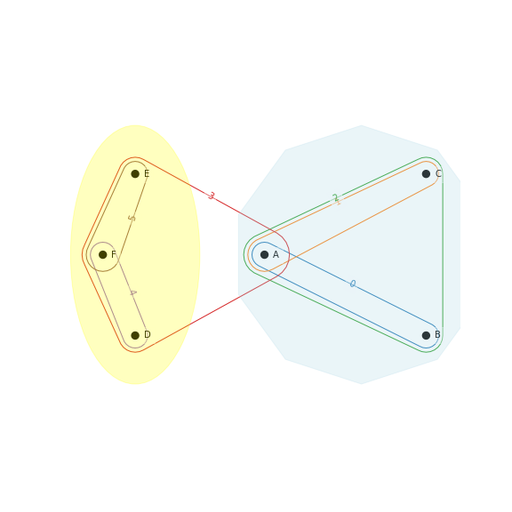

Modularity and Clustering
{kind=link}
Overview
The hypergraph_modularity submodule in HNX provides functions to compute hypergraph modularity for a given partition of the vertices in a hypergraph. In general, higher modularity indicates a better partitioning of the vertices into dense communities.
Two functions to generate such hypergraph partitions are provided: Kumar’s algorithm, and the simple Last-Step refinement algorithm.
The submodule also provides a function to generate the two-section graph for a given hypergraph which can then be used to find vertex partitions via graph-based algorithms.
Installation
Since it is part of HNX, no extra installation is required. The submodule can be imported as follows:
import hypernetx.algorithms.hypergraph_modularity as hmod
Using the Tool
Precomputation
In order to make the computation of hypergraph modularity more efficient, some quantities need to be pre-computed. Given hypergraph H, calling:
HG = hmod.precompute_attributes(H)
will pre-compute quantities such as node strength (weighted degree), d-weights (total weight for each edge cardinality) and binomial coefficients.
Modularity
Given hypergraph HG and a partition A of its vertices, hypergraph modularity is a measure of the quality of this partition. Random partitions typically yield modularity near zero (it can be negative) while positive modularity is indicative of the presence of dense communities, or modules. There are several variations for the definition of hypergraph modularity, and the main difference lies in the weight given to different edges. Modularity is computed via:
q = hmod.modularity(HG, A, wdc=linear)
In a graph, an edge only links 2 nodes, so given partition A, an edge is either within a community (which increases the modularity) or between communities.
With hypergraphs, we consider edges of size d=2 or more. Given some vertex partition A and some d-edge e, let c be the number of nodes that belong to the most represented part in e; if c > d/2, we consider this edge to be within the part. Hyper-parameters 0 <= w(d,c) <= 1 control the weight given to such edges. Three functions are supplied in this submodule, namely:
- linear
\(w(d,c) = c/d\) if \(c > d/2\), else \(0\).
- majority
\(w(d,c) = 1\) if \(c > d/2\), else \(0\).
- strict
\(w(d,c) = 1\) if \(c == d\), else \(0\).
The ‘linear’ function is used by default. More details in [2].
Two-section graph
There are several good partitioning algorithms for graphs such as the Louvain algorithm and ECG, a consensus clustering algorithm. One way to obtain a partition for hypergraph HG is to build its corresponding two-section graph G and run a graph clustering algorithm. Code is provided to build such graph via:
G = hmod.two_section(HG)
which returns an igraph.Graph object.
Clustering Algorithms
Two clustering (vertex partitioning) algorithms are supplied. The first one is a hybrid method proposed by Kumar et al. (see [1]) that uses the Louvain algorithm on the two-section graph, but re-weights the edges according to the distibution of vertices from each part inside each edge. Given hypergraph HG, this is called as:
K = hmod.kumar(HG)
The other supplied algorithm is a simple method to improve hypergraph modularity directely. Given some initial partition of the vertices (for example via Louvain on the two-section graph), move vertices between parts in order to improve hypergraph modularity. Given hypergraph HG and initial partition A, this is called as:
L = hmod.last_step(HG, A, wdc=linear)
where the ‘wdc’ parameter is the same as in the modularity function.
Other Features
We represent a vertex partition A as a list of sets, but another conveninent representation is via a dictionary. We provide two utility functions to switch representation, namely A = dict2part(D) and D = part2dict(A).
References
[1] Kumar T., Vaidyanathan S., Ananthapadmanabhan H., Parthasarathy S. and Ravindran B. “A New Measure of Modularity in Hypergraphs: Theoretical Insights and Implications for Effective Clustering”. In: Cherifi H., Gaito S., Mendes J., Moro E., Rocha L. (eds) Complex Networks and Their Applications VIII. COMPLEX NETWORKS 2019. Studies in Computational Intelligence, vol 881. Springer, Cham. https://doi.org/10.1007/978-3-030-36687-2_24
[2] Kamiński B., Prałat P. and Théberge F. “Community Detection Algorithm Using Hypergraph Modularity”. In: Benito R.M., Cherifi C., Cherifi H., Moro E., Rocha L.M., Sales-Pardo M. (eds) Complex Networks & Their Applications IX. COMPLEX NETWORKS 2020. Studies in Computational Intelligence, vol 943. Springer, Cham. https://doi.org/10.1007/978-3-030-65347-7_13